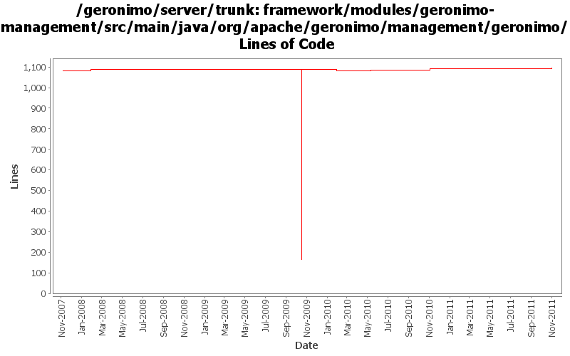

[root]/framework/modules/geronimo-management/src/main/java/org/apache/geronimo/management/geronimo
 stats
(7 files, 534 lines)
stats
(7 files, 534 lines)

| Author | Changes | Lines of Code | Lines per Change |
|---|---|---|---|
| Totals | 41 (100.0%) | 943 (100.0%) | 23.0 |
| djencks | 21 (51.2%) | 924 (98.0%) | 44.0 |
| genspring | 3 (7.3%) | 6 (0.6%) | 2.0 |
| ashishjain | 1 (2.4%) | 6 (0.6%) | 6.0 |
| vamsic007 | 5 (12.2%) | 5 (0.5%) | 1.0 |
| gawor | 3 (7.3%) | 2 (0.2%) | 0.6 |
| xuhaihong | 2 (4.9%) | 0 (0.0%) | 0.0 |
| rickmcguire | 2 (4.9%) | 0 (0.0%) | 0.0 |
| pmcmahan | 2 (4.9%) | 0 (0.0%) | 0.0 |
| dwoods | 2 (4.9%) | 0 (0.0%) | 0.0 |
GERONIMO-6209: Class hot swap for OSGi applications
2 lines of code changed in 1 file:
Make life eaiser to view attributes of a connector when debuging web connectors.
6 lines of code changed in 1 file:
GERONIMO-5295 Fix for trunk
6 lines of code changed in 1 file:
GERONIMO-434, GERONIMO-4360 runtime TransactionSupport support, which requires reversing the connection manager to mcf dependency. This allows extracting the connection factor from the jsr-77 connection factory object
0 lines of code changed in 4 files:
web apps no longer have a base url since they are always packed in bundles
0 lines of code changed in 1 file:
some more logging updates: 1) use geronimo log4j.properties files to configure logging, 2) expose service to configure logging programtically, 3) remove unused geronimo-logging module
0 lines of code changed in 2 files:
add new methods to WebContainer, have MockBundle create MockBundleContext
0 lines of code changed in 2 files:
GERONIMO-4916 step 2 move sandbox osgi framework into trunk
924 lines of code changed in 7 files:
GERONIMO-4916 step 1 remove old framwork
0 lines of code changed in 7 files:
GERONIMO-4742 Connector portlets for Tomcat does not work
1, Added ConnectorWrapperGBeanStarter.java to start connector GBeans for connectors defined in server.xml.
2, Added TomcatServerConfigManager.java to use DOM to read/write connectors from server.xml.
3, Modified other classes to make this happen.
0 lines of code changed in 2 files:
GERONIMO-4659 Include web app "Display Name" in console web app portlet (Patch from Victor Fang)
0 lines of code changed in 2 files:
GERONIMO-4475 Improve JMS portlet for Borker configuration. Applied 4 patches from Ivan.
0 lines of code changed in 2 files:
GERONIMO-3757 KeyStore type can't be changed
o Allow creation of all possible keystore types supported. Keystore type is no longer restricted to JKS.
o Added a type parameter to create keystore methods.
o Keystores portlet will now allow creating and managing all types of keystores.
o This revision will simplify the configuration changes required to run G on a JVM that does not support JKS keystores (for e.g., Harmony).
5 lines of code changed in 3 files:
GERONIMO-3732 steps 1, 2. Move plugin management and some jsr88 base code into a new module
0 lines of code changed in 2 files:
GERONIMO-3648 Keystores portlet should provide for changing keystore and key passwords
o Added changeKeystorePassword() and changeKeyPassword() methods to KeystoreInstance.
o Updated Keystores portlet to provide "Change keystore password" and "Change key password" links.
0 lines of code changed in 2 files:
GERONIMO-3523 increase the header buffer size to 8k for jetty connector and make the setting configurable
for new and existing jetty web connectors
0 lines of code changed in 2 files: